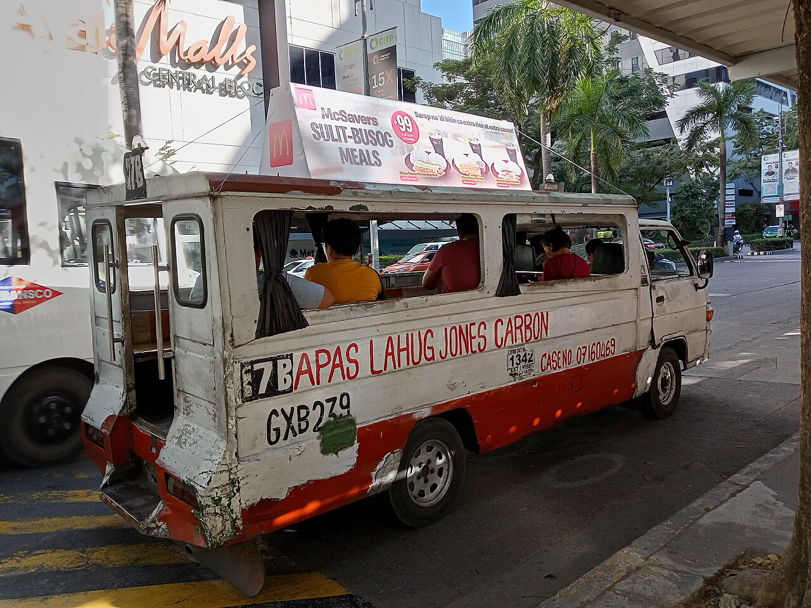
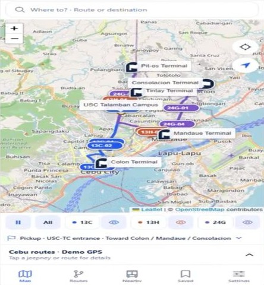

Find your route
Search by route or destination, then see where jeepneys are along the corridor.
Prototype screen · simulated locationsMetro Cebu, Philippines
An onboard GPS tracker and a commuter app for the questions you ask at the stop. Where’s my jeepney? When will it arrive? Is there room?
See how it works

The onboard tracker
A planned ESP32-based unit would travel with each participating jeepney. Here’s how one location update would reach your stop.
The GPS module would read the vehicle’s coordinates. The ESP32 would collect each fix as the jeepney follows its route.
A cellular modem would send the coordinates to LarGo’s cloud backend so the app could receive the latest position.
LarGo would update the map marker and use the jeepney’s direction and progress along its route to estimate when it will reach the selected stop.
The commuter app
Search by route or destination, then see where jeepneys are along the corridor.
Prototype screen · simulated locationsSelect your stop and check the estimated wait for a jeepney heading your way.
Static mockup · example arrivalSee whether a ride has seats, has limited space, or is full. The prototype demonstrates these states with simulated capacity.
Static mockup · example capacity